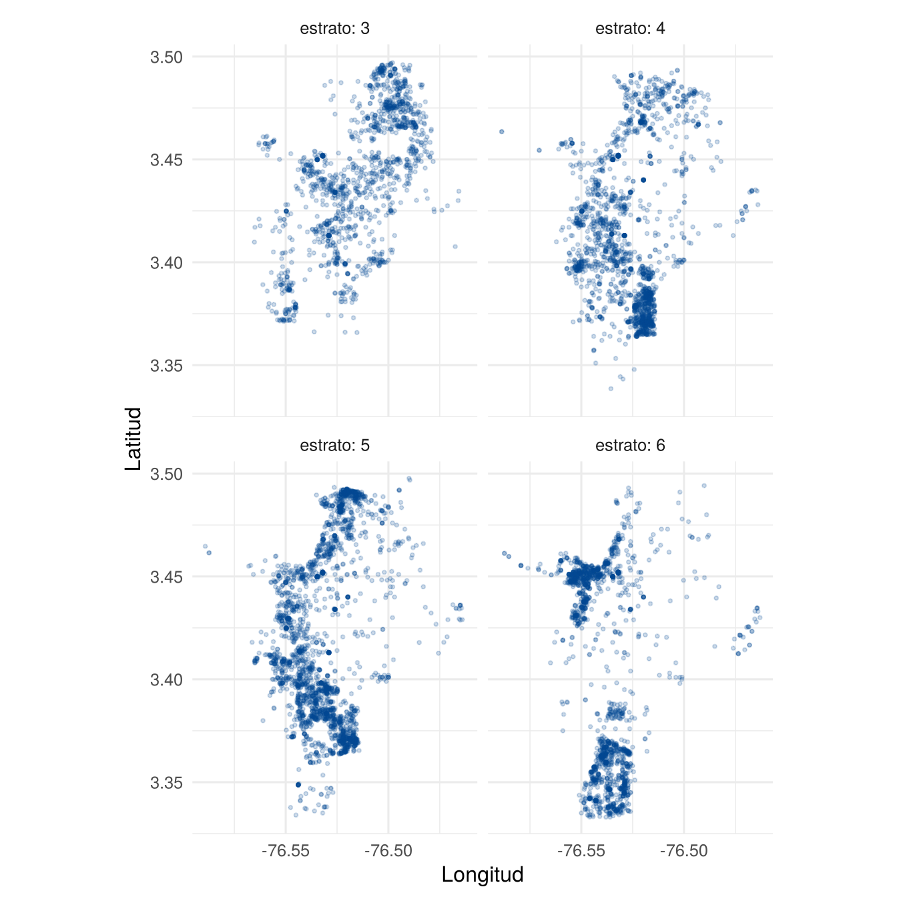
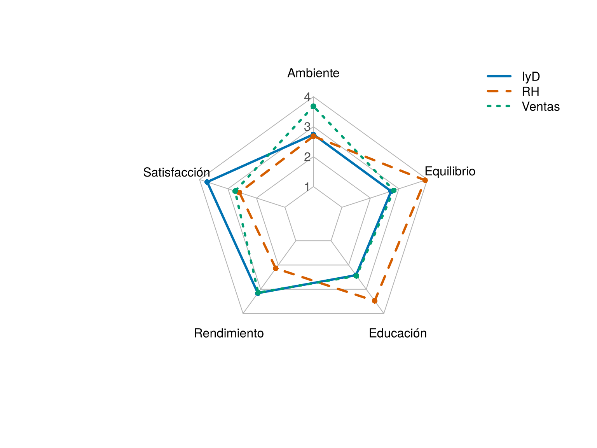
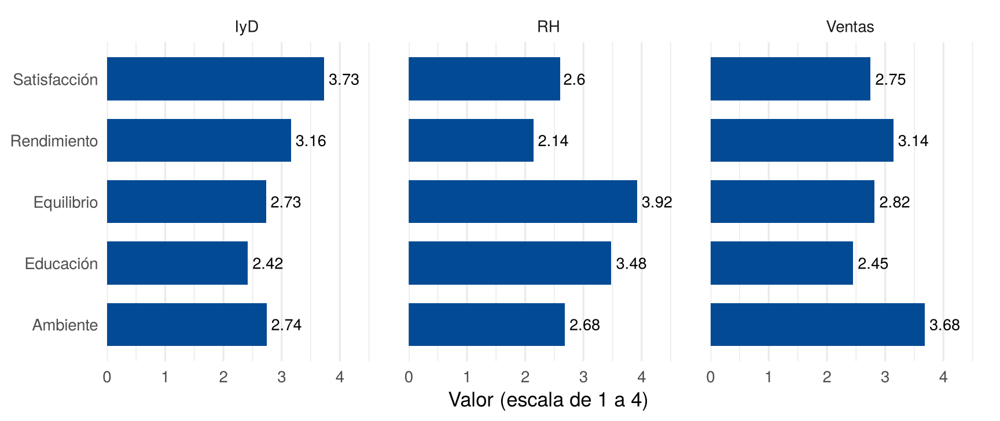
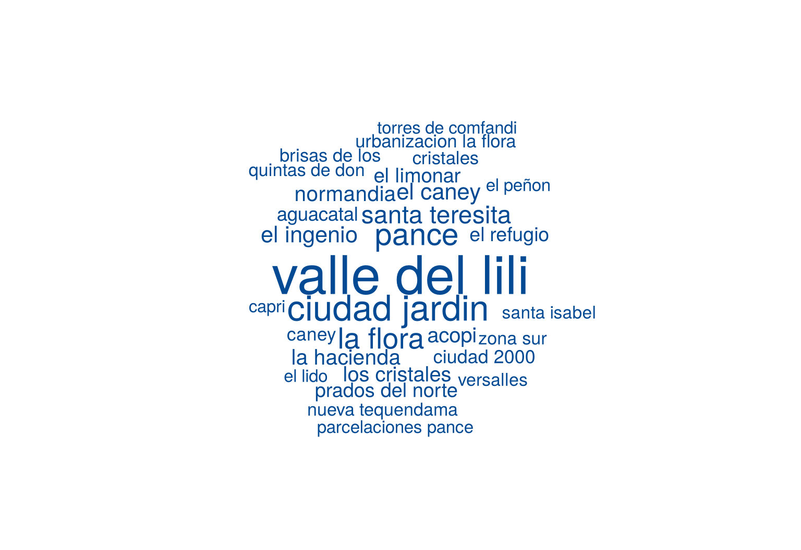
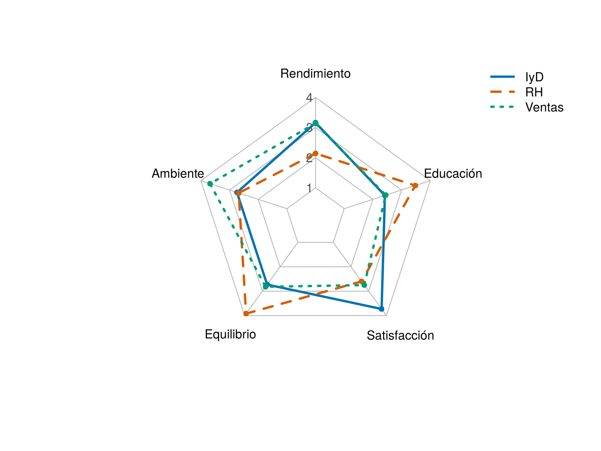
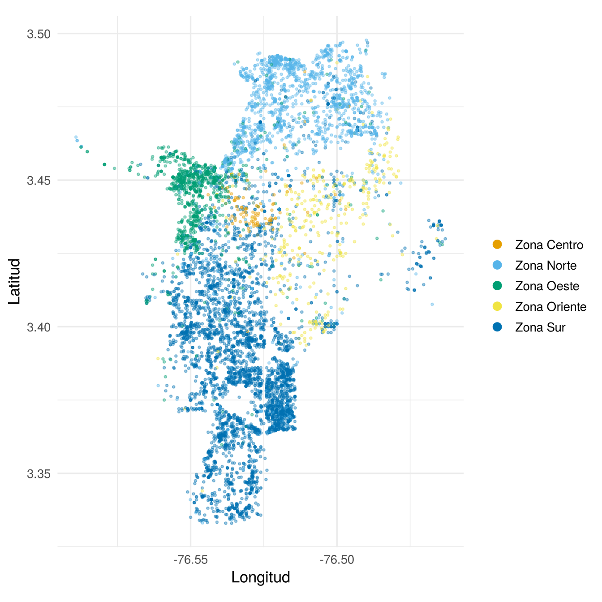
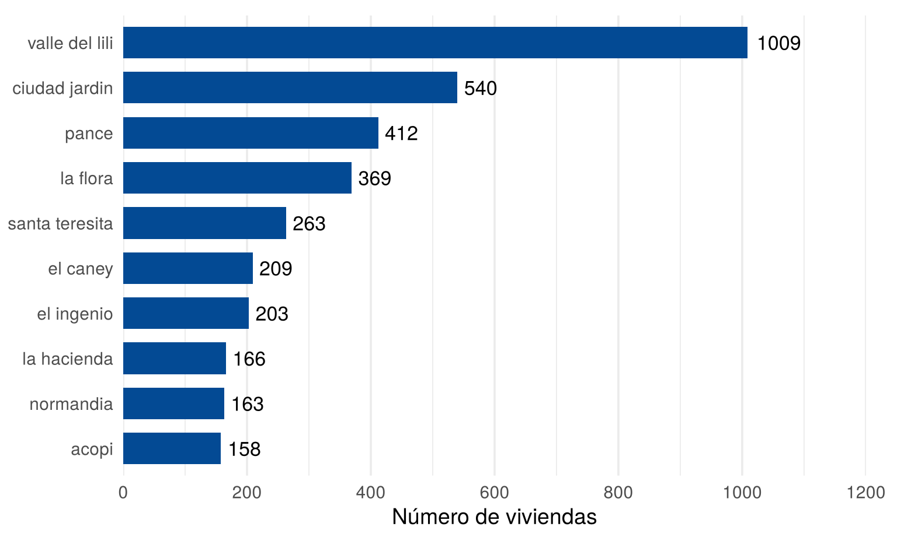

Además de los gráficos anteriores, existen otras formas de representar datos. Esta página presenta tres de las más usadas, cómo construirlas e interpretarlas: el mapa, el gráfico de radar y la nube de palabras. Para ver más opciones, cada sección enlaza a From Data to Viz.
Esta página usa vivienda_faltantes, del paquete
paqueteMETODOS, y el paquete ggplot2. Los
bloques de código se ejecutan en orden, porque algunos usan objetos
creados en bloques anteriores.
library(paqueteMETODOS)
data("vivienda_faltantes")library(ggplot2)¿Para qué sirve? Para ver cómo se reparten los datos en un territorio, con colores, tamaños o símbolos. El más sencillo es un gráfico de dispersión de la longitud y la latitud.
¿Cómo se hace? En vivienda_faltantes,
parte de las coordenadas está escrita sin punto decimal: algunas
longitudes aparecen como -76576 y otras como
-76.54. Primero se ponen en la misma escala:
ubicacion <- subset(vivienda_faltantes, !is.na(longitud) & !is.na(latitud) & !is.na(estrato))
ubicacion$lon <- ifelse(abs(ubicacion$longitud) > 1000, ubicacion$longitud / 1000, ubicacion$longitud)
ubicacion$lat <- ifelse(abs(ubicacion$latitud) > 1000, ubicacion$latitud / 1000, ubicacion$latitud)
summary(ubicacion[, c("lon", "lat")]) lon lat
Min. :-76.59 Min. :3.333
1st Qu.:-76.54 1st Qu.:3.381
Median :-76.53 Median :3.416
Mean :-76.53 Mean :3.418
3rd Qu.:-76.52 3rd Qu.:3.452
Max. :-76.46 Max. :3.498 coord_quickmap() ajusta la proporción entre los ejes
para que el mapa no se vea deformado.
ggplot(ubicacion, aes(x = lon, y = lat)) +
geom_point(color = "#034A94", alpha = 0.2, size = 0.7) +
facet_wrap(~ estrato, labeller = label_both) +
coord_quickmap() +
labs(x = "Longitud", y = "Latitud") +
theme_minimal(base_size = 12)
Ubicación de las viviendas por estrato
¿Cómo se interpreta? Se compara dónde se concentran los puntos en cada panel. Las viviendas de estrato 3 se reparten por el norte y el oriente, mientras que las de estrato 6 se concentran en el oeste y el sur.
¿Qué cuidados tener?
summary().Ver más: mapa de fondo, mapa coroplético, mapa de burbujas, mapa de hexágonos y cartograma.
¿Para qué sirve? Para comparar el perfil de pocos grupos en varias variables con la misma escala. Cada variable tiene un eje que sale del centro, y los valores se unen formando un polígono.
¿Cómo se hace? Se usa la función
radarchart() del paquete fmsb.
¿Qué problema resuelve el paquete? La base de
R y ggplot2 no tienen una función directa
para este gráfico.
¿Qué hace? Dibuja los ejes, la cuadrícula y los polígonos.
¿Cómo se usa? Se instala una vez con
install.packages("fmsb") y se carga con
library(fmsb). Las dos primeras filas de la tabla deben ser
el máximo y el mínimo de cada eje.
¿Cuándo usarlo? Con pocos grupos, y variables que compartan la misma escala.
Este ejemplo compara tres áreas de una empresa en cinco indicadores, con datos de ejemplo en una escala de 1 a 4:
library(fmsb)
indicadores <- data.frame(
rbind(
rep(4, 5),
rep(1, 5),
c(2.74, 3.73, 3.16, 2.42, 2.73),
c(2.68, 2.60, 2.14, 3.48, 3.92),
c(3.68, 2.75, 3.14, 2.45, 2.82)
)
)
colnames(indicadores) <- c("Ambiente", "Satisfacción", "Rendimiento",
"Educación", "Equilibrio")
rownames(indicadores) <- c("Máximo", "Mínimo", "IyD", "RH", "Ventas")
colores <- c("#0072B2", "#D55E00", "#009E73")
radarchart(indicadores, pcol = colores, plty = 1:3, plwd = 3, cglcol = "gray70",
cglty = 1, axistype = 1, seg = 3, caxislabels = 1:4, axislabcol = "gray30")
legend("topright", legend = c("IyD", "RH", "Ventas"), col = colores, lty = 1:3,
lwd = 3, bty = "n")
Indicadores de tres áreas de una empresa
¿Cómo se interpreta? Entre más lejos del centro esté un punto, más alto es el indicador. RH sobresale en Equilibrio y Educación, y Ventas en Ambiente.
¿Qué cuidados tener? (Holtz y Healy)
Una alternativa más precisa es un gráfico de barras con un panel por grupo:
barras <- data.frame(
area = rep(c("IyD", "RH", "Ventas"), each = 5),
indicador = rep(colnames(indicadores), 3),
valor = c(unlist(indicadores[3, ]), unlist(indicadores[4, ]), unlist(indicadores[5, ]))
)
ggplot(barras, aes(x = valor, y = indicador)) +
geom_col(fill = "#034A94", width = 0.7) +
geom_text(aes(label = valor), hjust = -0.15, size = 3.6) +
facet_wrap(~ area) +
scale_x_continuous(limits = c(0, 4.8), breaks = 0:4, expand = c(0, 0)) +
labs(x = "Valor (escala de 1 a 4)", y = NULL) +
theme_minimal(base_size = 13) +
theme(panel.grid.major.y = element_blank(), panel.spacing = unit(1, "lines"))
Los mismos indicadores en barras
Ver más: advertencias sobre el radar y coordenadas paralelas.
¿Para qué sirve? Para dar una primera impresión de un conjunto de palabras. El tamaño de cada palabra representa su frecuencia.
¿Cómo se hace? Se usa la función
wordcloud() del paquete del mismo nombre.
¿Qué problema resuelve el paquete? Ubica las palabras sin que se monten unas sobre otras.
¿Qué hace? Recibe las palabras y sus frecuencias, y dibuja cada palabra con un tamaño proporcional.
¿Cómo se usa? Se instala una vez con
install.packages("wordcloud") y se carga con
library(wordcloud). Las palabras se ubican al azar, así que
se usa set.seed() para obtener siempre la misma figura.
¿Cuándo usarlo? Cuando importa más dar una impresión general que leer cifras.
library(wordcloud)
barrio <- tolower(vivienda_faltantes$barrio)
barrio <- chartr("áéíóú", "aeiou", barrio)
barrios <- sort(table(barrio), decreasing = TRUE)[1:30]
set.seed(1)
par(mar = c(0, 0, 0, 0))
wordcloud(names(barrios), as.numeric(barrios), scale = c(3.2, 0.9), random.order = FALSE,
rot.per = 0, colors = "#034A94")
Barrios con más viviendas en la base
¿Cómo se interpreta? Las palabras más grandes son
las más frecuentes. En la figura, Valle del Lili es el barrio con más
viviendas, y le siguen Ciudad Jardín y Pance. Los nombres no están del
todo unificados: aparecen, por ejemplo, caney y
el caney.
¿Qué cuidados tener? El tamaño no permite leer una frecuencia exacta, y las palabras largas parecen más grandes solo por tener más letras (Holtz y Healy). Si se necesitan las cifras, conviene usar barras.
Ver más: nube de palabras y líneas y puntos.
From Data to Viz reúne muchos más gráficos. Estos son algunos que aparecen en informes y artículos:
| Gráfico | Qué muestra |
|---|---|
| Barras circulares | Barras alrededor de un círculo |
| Mapa de calor | Valores de una tabla con colores |
| Mapa de árbol | Partes de un total con rectángulos |
| Coordenadas paralelas | Varias variables numéricas a la vez |
| Problema | Causa | Solución |
|---|---|---|
| El mapa se ve aplastado | La longitud y la latitud tienen escalas distintas | Usar coord_quickmap() |
| El mapa muestra dos grupos muy separados | Las coordenadas están en escalas diferentes | Revisar los rangos con summary() |
radarchart() dibuja mal los polígonos |
Faltan las filas de máximo y mínimo | Poner esas dos filas de primeras |
| El radar compara variables de distinta escala | Se mezclan unidades | Usar una escala común o barras |
could not find function "wordcloud" |
No se cargó el paquete | Ejecutar library(wordcloud) |
| La nube cambia cada vez | Las palabras se ubican al azar | Usar set.seed() |
| Se usa un gráfico por llamativo | Se elige por apariencia y no por la pregunta | Volver a ¿Qué tipos de gráficos existen? |
Cambie el orden de las columnas de indicadores y vuelva
a dibujar el radar. ¿Cambiaron los datos? ¿Cambió la forma?
Los datos son los mismos, pero la forma cambia. Por eso la forma de un radar no debe interpretarse por sí sola.
reordenado <- indicadores[, c("Rendimiento", "Ambiente", "Equilibrio", "Satisfacción", "Educación")]
radarchart(reordenado, pcol = colores, plty = 1:3, plwd = 3, cglcol = "gray70",
cglty = 1, axistype = 1, seg = 3, caxislabels = 1:4, axislabcol = "gray30")
legend("topright", legend = c("IyD", "RH", "Ventas"), col = colores, lty = 1:3,
lwd = 3, bty = "n")
El mismo radar con otro orden de los ejes
Haga el mapa de puntos por zona en lugar de estrato, con un solo panel y un color por zona. ¿Las zonas se ven separadas?
zonas <- subset(ubicacion, !is.na(zona))
ggplot(zonas, aes(x = lon, y = lat, color = zona)) +
geom_point(alpha = 0.4, size = 0.7) +
scale_color_manual(values = unname(palette.colors(6, "Okabe-Ito")[2:6])) +
guides(color = guide_legend(override.aes = list(size = 3, alpha = 1))) +
coord_quickmap() +
labs(x = "Longitud", y = "Latitud", color = NULL) +
theme_minimal(base_size = 13)
Ubicación de las viviendas por zona
Las zonas ocupan áreas diferentes, aunque hay puntos de una zona dentro de otra. Antes de usarlos, convendría revisar esos puntos.
Haga un gráfico de barras horizontales con los diez barrios más
frecuentes, usando la tabla barrios. ¿Qué información da
que la nube no da?
diez <- as.data.frame(barrios[1:10])
names(diez) <- c("barrio", "viviendas")
ggplot(diez, aes(x = viviendas, y = reorder(barrio, viviendas))) +
geom_col(fill = "#034A94", width = 0.7) +
geom_text(aes(label = viviendas), hjust = -0.2, size = 4.5) +
scale_x_continuous(limits = c(0, 1200), breaks = seq(0, 1200, 200), expand = c(0, 0)) +
labs(x = "Número de viviendas", y = NULL) +
theme_minimal(base_size = 14) +
theme(panel.grid.major.y = element_blank(), plot.margin = margin(10, 20, 5, 5))
Los diez barrios con más viviendas
Las barras dan la frecuencia exacta y permiten ordenar los barrios.
Última revisión: 5 de noviembre de 2026.